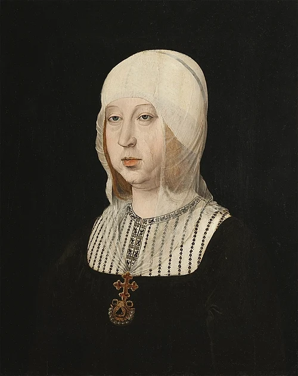
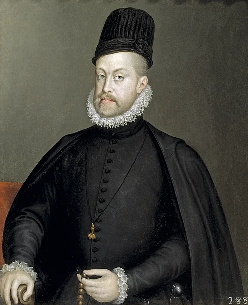
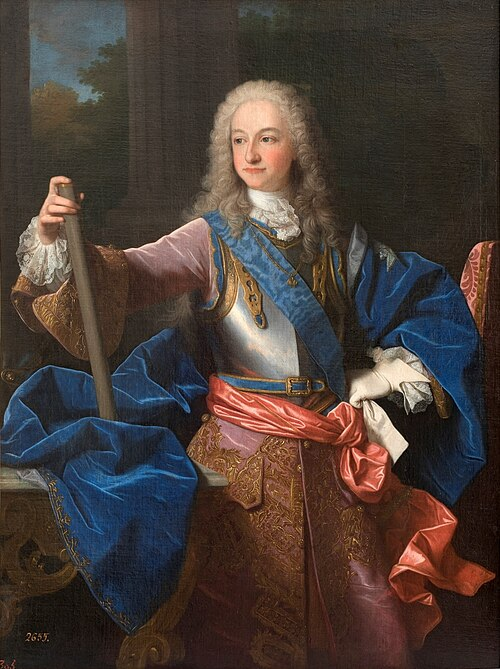
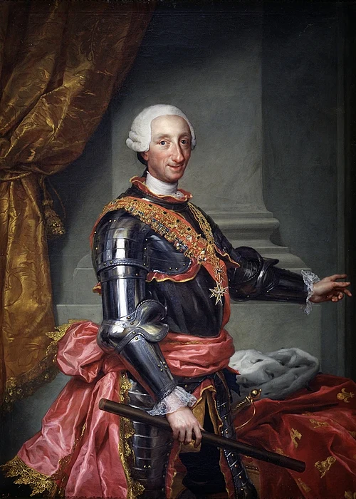

| Retrato | Monarca | Dinastía | Reinado | |
|---|---|---|---|---|
| Inicio | Fin | |||
 |
Isabel I de Castela | Trastámara | ||
 |
Fernándo II de Aragón | Trastámara | ||
 |
Juana I | Trastámara | ||
 |
Felipe I | Habsburgo | ||
 |
Carlos I | Habsburgo | ||
 |
Felipe II | Habsburgo | ||
 |
Felipe III | Habsburgo | ||
 |
Felipe IV | Habsburgo | ||
 |
Carlos II | Habsburgo | ||
 |
Felipe V | Borbón | ||
 |
Luis I | Borbón | ||
 |
Fernando VI | Borbón | ||
 |
Carlos III | Borbón | ||
| Resumen por dinastías | Monarcas | Suma de los años | ||
| Trastámara | 3 | 121 | ||
| Habsburgo | 6 | 190 | ||
| Borbón | 4 | 88 | ||